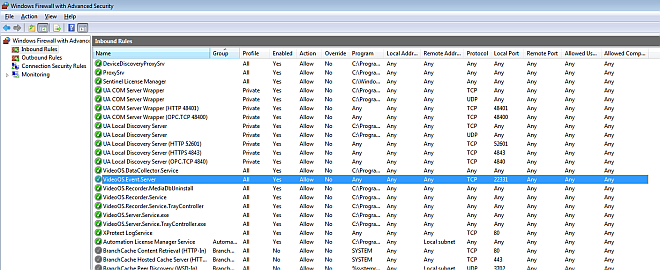

Setting up Networking for the VMS
This section provides instructions for setting up networking between Desigo CC and the Video Management System (VMS). For the full integration workflow see Integrating Video Surveillance.
Enable VMS Name Resolution
The communication between the BT Video API and the VMS internally uses the hostname of the VMS server. Any other client computer that displays live video needs to be able to resolve this name to an IP address. Therefore, a working DNS or WINS server must be set up, or NETBIOS broadcast must work. If this cannot be accomplished, it must be done by an entry to the hosts or lmhosts file of the client computers.
- From the Desigo CC server, verify that you can ping the VMS server using both the IP address and the host name as configured in SMC (see Configure Project Settings for Video).
- Likewise, from the VMS server, verify that you can ping the Desigo CC server in the same way.
Set up VMS Firewall Rules
To secure the video system, you must use a firewall and protect the servers from attacks.
This section illustrates the required exception rules to allow traffic on the necessary ports, and provides specific instructions for Windows Firewall with Advanced Security.
BT Video API Service TCP Port:
The BT Video API runs on the same computer as the management-system server, and no external access is required. The TCP port used by the BT Video API is configured in SMC (default is 8001).
To avoid any unwanted access to the BT Video API from outside, never open its port (no inbound rules) in the Windows firewall.
VMS Ports:
The VMS software needs some ports to handle the video control and data traffic. During setup, the VMS software adds various exception rules to the Windows firewall.
Such rules allow the VMS to communicate with the BT Video API and client stations through the Windows firewall. There is only one port (22333) that may not be included in the default rules, and that you may have to add manually.
- To allow access to port 22333, in the Inbound Rules of the Windows firewall of the VMS server, you can modify the VideoOS.Event.Server rule and add 22333 to the default port list that only includes port 22331.

For setting up firewall rules in other environments, refer to the VMS documentation (see References).
Time Synchronize the Video Servers
For reliable behavior, all servers in the system must be time synchronized. Specifically, if the VMS server is installed on a separate computer from the Desigo CC server:
- The time must be identical on both the Desigo CC server computer and the VMS server computer.
- Regional Settings must be identical on both the Desigo CC server computer and the VMS server computer.
- If the time zone flag is enabled on one computer (for example, the Desigo CC server) it must also be enabled on the other (for example, the VMS Server). Otherwise, you must disable it on both computers and finally realign the computer time if has not been automatically updated.
We recommend assigning all computers and cameras to a common NTP server that acts as time master.
NOTE: If the time is not properly synchronized, a fault event (VMS unreachable) will be issued in Desigo CC.